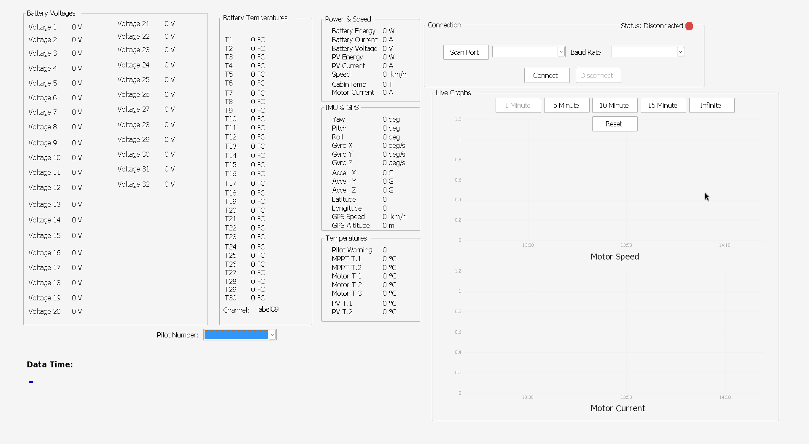
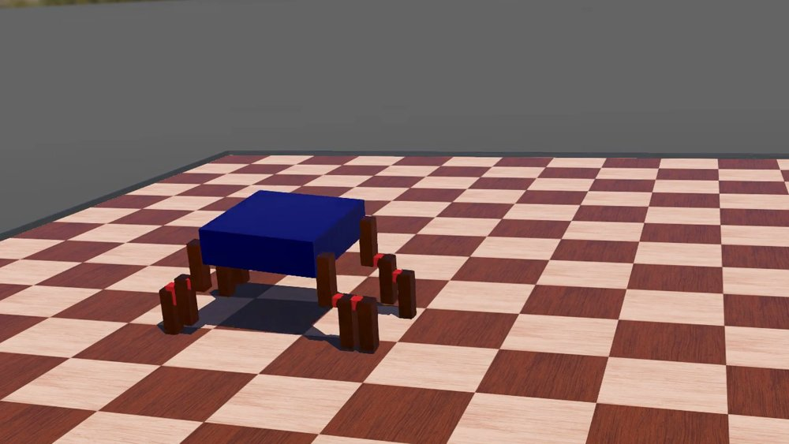

Hardware
PCB design, board bring-up and verification — from a KiCad schematic to a validated board on the bench, including safety and compliance testing.
whoami
I design circuit boards, program the chips on them, and build the software that reads their data.
Currently in appliance R&D at Vestel, testing electronic control boards for functionality, performance and safety compliance.
PCB design, board bring-up and verification — from a KiCad schematic to a validated board on the bench, including safety and compliance testing.
The code that runs on the chip: bare-metal firmware talking to sensors and radios over BLE, I2C and UART.
Desktop and data tools that read, visualise and process what the hardware produces.



From schematic to firmware to the tool that reads the data — happy to talk.